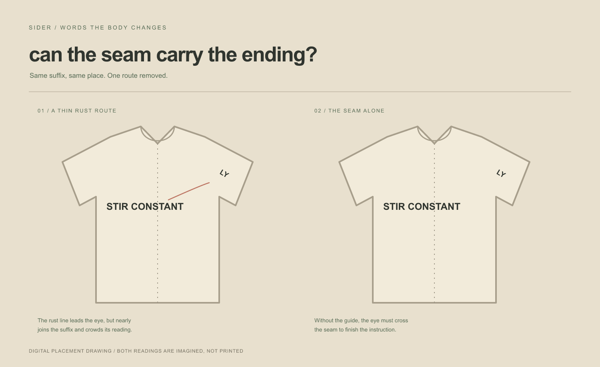

Sider / 2026
Can the seam carry the ending?

The garments are drawn, not printed. One version uses a faint rust guide to the suffix; the other asks the seam to carry the gap.
Sider / 2026

The garments are drawn, not printed. One version uses a faint rust guide to the suffix; the other asks the seam to carry the gap.